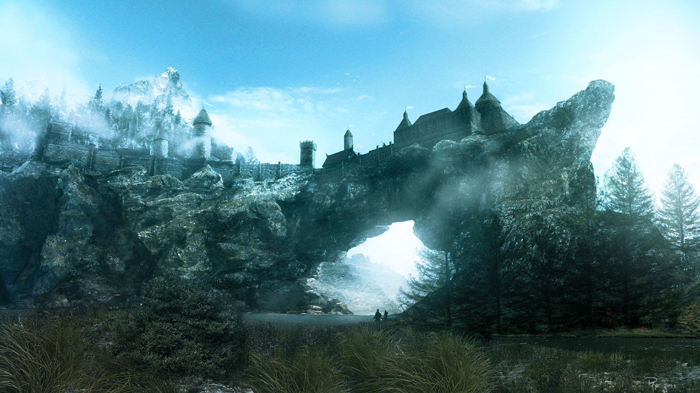
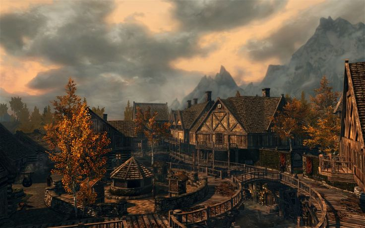

Solitude is and imperial based city in the northern region of skyrim. This city provides a simple aesthetic with its long streets and huge mansions. The city sits upon rocks hanging over the northern waters of skyrim. Solitude is home to the Blue Palace, the residents of the Jarl elisif. The people of Solitude are mostly fisermen due to the location of the city. Solitude is also home to the East Empire Company, a merchant organization thats focuses on trade. The East Empire Company has a port in solitude for the movement of goods. All in all the city of Solitude provides a simple yet admirable aesthetic that pleases the eye.
Riften is another imperial based city in the south east region of skyrim. Being one of the smallest cities in skyrim doesn't affect the aesthetic of the city. The city of Riften was built over water which makes the city unique.Riften is home to the Black Briar Meadery,the waelthiest mead distributer in Skyrim. Underneath the city is the Ratway which is a sewer system that leads to the ragged flaggon. The Ragged Flaggon is an inn/bar for the people of the city. All in all Riften is a beautifully laid out city with its log cabins and dock style streets.
